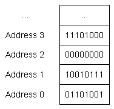

4.1 — 基础数据类型简介
位、字节和内存寻址
在课程 1.3 -- 对象与变量简介我们讨论了变量是内存中可用于存储信息的一块区域的名称。简要回顾一下，计算机拥有可供程序使用的随机存取存储器（RAM）。当定义一个变量时，会为该变量预留一部分内存。
内存的最小单位是 二进制位 （也称为 位)，它可以保存0或1的值。你可以把位想象成一个传统的电灯开关——要么灯关着（0），要么灯亮着（1）。没有中间状态。如果你查看内存的任意一段，你只会看到…011010100101010…或类似的组合。
内存被组织成连续的单元，称为 内存地址 （或 地址 （简称地址）。类似于街道地址可以用来找到街上的某一栋房子，内存地址允许我们找到并访问特定位置的内存内容。
也许令人惊讶的是，在现代计算机体系结构中，每个位并没有自己独特的内存地址。这是因为内存地址的数量是有限的，并且逐位访问数据的需求很少。相反，每个内存地址保存1字节的数据。一 字节 是一组作为一个整体操作的位。现代标准是一个字节由8个连续的位组成。
关键提示
在C++中，我们通常处理“字节大小”的数据块。
下图展示了一些连续的内存地址以及对应的字节数据：

顺便说一句……
一些较旧或非标准的机器可能具有不同大小的字节（从1到48位）——然而，我们通常不必担心这些，因为现代的事实标准是一个字节为8位。在本教程中，我们将假设一个字节为8位。
数据类型
因为计算机上的所有数据都只是一串位序列，我们使用一种 数据类型 （通常称为 类型 （简称类型）来告诉编译器如何以某种有意义的方式解释内存的内容。你已经看到了数据类型的一个例子：整数。当我们声明一个变量为整数时，我们是在告诉编译器“这个变量使用的内存将被解释为一个整数值”。
当你给一个对象赋值时，编译器和CPU负责将你的值编码为该数据类型对应的位序列，然后存储在内存中（记住：内存只能存储位）。例如，如果你给一个整数对象赋值 65，该值会被转换为位序列 0100 0001 并存储在分配给该对象的内存中。
反之，当对象被求值以产生一个值时，该位序列被重新组合回原始值。这意味着 0100 0001 被转换回值 65。
幸运的是，编译器和CPU会处理所有繁重的工作，因此您通常无需担心值如何转换为位序列以及如何恢复。
您需要做的只是为您的对象选择一种最适合您使用需求的数据类型。
基础数据类型
C++语言提供了许多预定义的数据类型供您使用。这些类型中最基础的部分被称为 基础数据类型 （非正式地有时被称为 基本类型 或 原始类型)。
以下是基础数据类型的列表，其中一些您已经见过：
| 类型 | 类别 | 含义 | 示例 |
|---|---|---|---|
| float double long double | 浮点型 | 带小数部分的数字 | 3.14159 |
| bool | 整型（布尔型） | true 或 false | 真 |
| char wchar_t char8_t (C++20) char16_t (C++11) char32_t (C++11) | 整型（字符） | 文本中的单个字符 | ‘c’ |
| short int 整型 long int long long int (C++11) | 整型（整数） | 正负整数，包括0 | 64 |
| std::nullptr_t (C++11) | 空指针 | 空指针 | 空指针 |
| void | Void | 无类型 | 不适用 |
本章致力于详细探讨这些基础数据类型（除 std::nullptr_t，我们将讨论指针时再讲解它）。
整数与整型
在数学中，“整数”是指没有小数或分数部分的数字，包括负数和正数以及零。术语“integral”有多种不同含义，但在C++的上下文中用于表示“类似整数”。
C++标准定义了以下术语：
- 浮点类型的 标准整数类型 是
short，int，long，long long（包括它们的有符号和无符号变体）。 - 浮点类型的 整数类型 是
bool、各种 char 类型以及标准整数类型。
所有整数类型在内存中都以整数值存储，但只有标准整数类型在输出时会显示为整数值。我们将讨论 bool 以及 char 类型在各自的课程中输出时的行为。
C++ 标准也明确指出 “integer types” 是 “integral types” 的同义词。然而，按照惯例，“integer types” 更常作为 “标准整数类型” 的简写。
还要注意，术语 “整数类型” 仅包含基本类型。这意味着非基本类型（例如 enum 和 enum class）不是整数类型，即使它们以整数形式存储（并且对于 enum，也显示为整数）。
其他类型集合
C++ 包含三种类型集合。
前两种是语言本身内置的（不需要包含头文件即可使用）：
- “基本数据类型”提供了最基本和最重要的数据类型。
- “复合数据类型”提供了更复杂的数据类型，并允许创建自定义（用户定义）类型。我们在课程 12.1 -- 复合数据类型简介。
基本类型和复合类型之间的区别并非那么重要或相关，因此通常可以将它们视为单一类型集合。
第三种（也是最大）类型集合由 C++ 标准库提供。由于标准库包含在所有 C++ 发行版中，这些类型广泛可用且已标准化以确保兼容性。使用标准库中的类型需要包含相应的头文件并链接标准库。
术语
术语 “内置类型” 通常用作基本数据类型的同义词。然而，Stroustrup 和其他人使用该术语来同时指代基本数据类型和复合数据类型（两者都是核心语言内置的）。由于这个术语定义不明确，我们建议避免使用它。
上述基本类型表中一个显著缺失是用于处理 字符串 （一个通常用于表示文本的字符序列）。这是因为在现代C++中，字符串是标准库的一部分。尽管本章我们将重点放在基本类型上，但由于基本字符串的用法直接且有用，我们将在下一章介绍字符串（在教程 5.7 -- std::string 简介)。
_t 后缀
许多在新版本C++中定义的类型（例如 std::nullptr_t) 使用 _t 后缀。这个后缀表示“类型”，是应用于现代类型的常见命名约定。
如果你看到带有 _t 后缀的东西，它很可能是一个类型。但许多类型没有 _t 后缀，所以这并非一致应用。